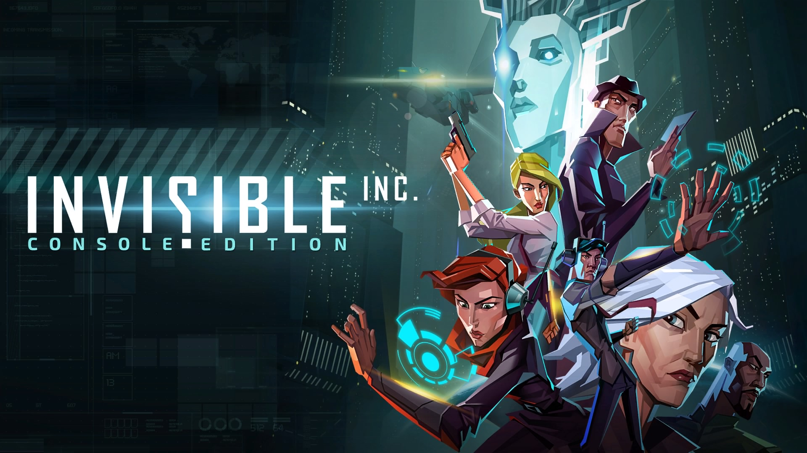

Turn based action oyunları her zaman için fazlasıyla zorlamıştır beni. Taaa 1994’de UFO: Enemy Unknown oynadığım günlerden beri hep maymuna çevirmiştir bu tarz oyunlar beni.
Grafiklerinin stili Counter Spy’a benzediğinden ve oynayabilecek yeni birşeyler arıyor olmamın heyecanı ile satın aldığım Invisible Inc. isimli oyunun konsol conversion’ı maalesef başarılı değil, öncelikle bunu belirtmem gerek. Yazılar, ikonlar o kadar küçük ki ekranın içine girmek lazım neyin ne olduğunu anlamak için. Bununla birlikte isometrik grafiklerde kapıların nerede olduğunu bile bulamadım bazen. (Tamam yaşlanıyorum, kabul.🤔) Geliştiricilerin oyunlarını konsola aktarırken arabirim üzerinde fazlasıyla çalışmaları gerek.(Bunun en güzel örneği Diablo 3 olmuştur.) Sonrasında oyun çok zor, gerçekten çok zor. Vakit, enerji ve harbiden sağlam sinirlere ihtiyaç var.
Şöyle işten gelince 1-2 saat takılıp stres atabileceğim bir oyun arıyorum ben, üzerinde saatlerce uğraşmam, her hamleyi usta bir satranç oyuncusu gibi düşünmem gereken derin oyunlar değil!